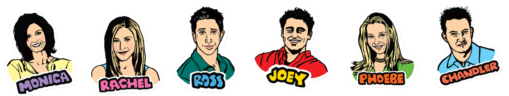

Explore Friends
Viva a experiência dos personagens de FRIENDS
Visitando os pontos turísticos que aparecem na série...
The Fountain Pulitzer
Nenhum outro ponto turístico se destaca mais do que a Fountain Pulitzer, essa é a fonte da abertura da série, onde os amigos dançam e até mesmo mergulham na fonte.
Museu de história Natural de Nova York
Este museu foi a inspiração para criar o ambiente em que Ross trabalhava, no episódio 15 da 2° temporada faz diversas referências ao museu.
Bloomingdales
Essa é a loja de departamento em que Rachel trabalhou depois que deixou de servir café no Central Perk e onde foi introduzida ao mundo da moda.
Um pouco mais da série:
Friends um seriado com um legado de fãs espalhados pelo mundo, originalmente foi exibida na NBC de 22 de setembro à 6 de maio de 2004, com um total de 236 espisódios, durante esses anos a série se situou em Nova York, onde um grupo de 6 amigos lutavam para se sobressair e progredir na competitiva vida de Manhattan.
Muitos fãs ao ver essa página vai questionar a falta do Central Perk, café onde os personagens se reunião para tomar um café durante os episódios, a série foi filmada em Los Angeles, o Central Perk nunca existiu fora dos estudios da Warner, por isso não citei ele nesse site.